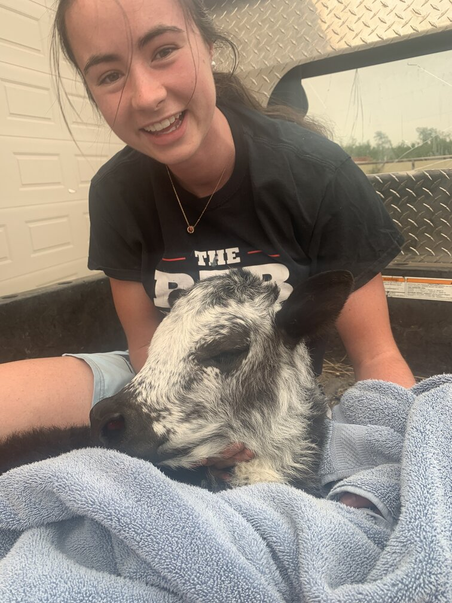
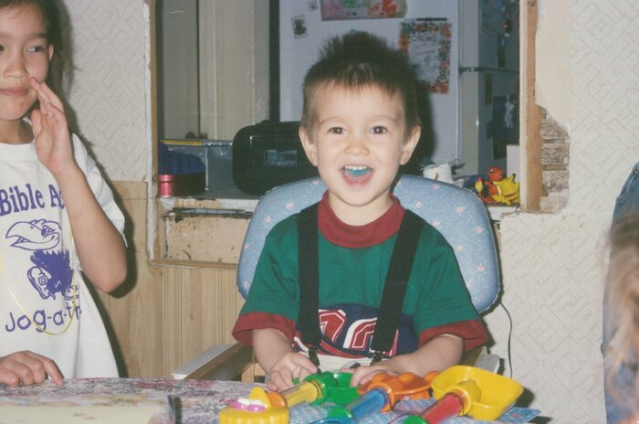
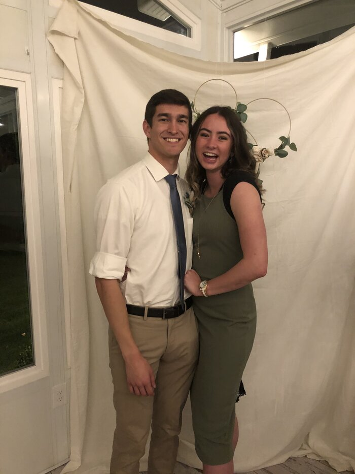
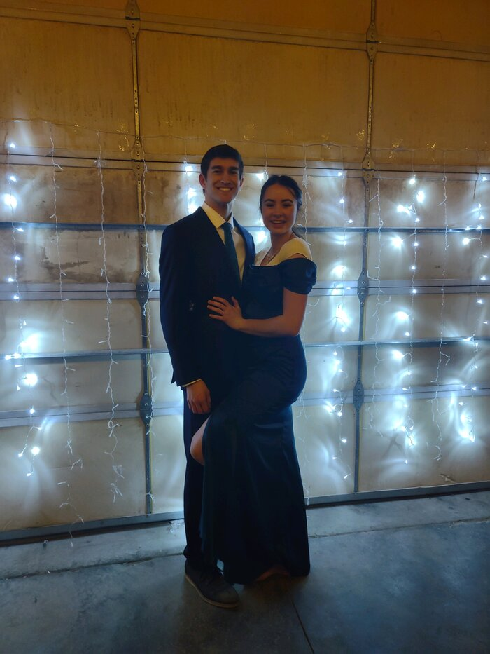

Camis Pilling
Born in Alberta, Canada, Camis was raised part-time in Edmonton where she was an avid athelete playing volleyball, rugby and basketball in high school. The other half of the time she grew up in Southern Alberta, near Cardston. There she spent her time on the family ranch raising buffalo, cows and yaks. After graduation, she went to BYU-Hawaii and studied animal science until she was called on a mission to Kobe, Japan. Upon returning home from Japan, the Hawaii campus was shut down so Camis transffered to BYU-Idaho to study nursing. After graduation of nursing school, she plans to continue her education and become a Nurse Practitioner.
Brandyn DeCoto
Born in Belividere, Illionis, Brandyn enjoyed growing up on a farm complete with chickens, goats and his favourite dog Momo. When he 14, he moved into the city and enjoyed a very active and involved life in school. Brandyn was a track, soccer and basketball player, but basketball was his true calling. Upon graduating high school at 16, he spent two years at his community college studying Psychology and being part of student government. After his time at community college, he transferred to BYU-Idaho where he switched his major to Business management. Branydn was called to serve in the Sendai, Japan mission that would later merge to become the Tokyo North mission. After returning home, he returned to BYU-Idaho and changed his major to Accoutning. After gradution he plans to use his fluency in Japanese to work in the financial sector for internation companies.
How We Met
Brandyn and Camis first met in the MTC in Provo Utah in September 2018 when they were both called to serve in Japan, though different missions. Brandyn was 3 weeks ahead of Camis in the 9 weeks Japanese program. Camis remembers first being drawn to Brandyn because of his humor, as he was good friends with the Elders in her district, Brandyn was around often. The two began to build a frienship when they started palying basketball together during excersize time. Everyday they would play together for the hour and the games eventually grew to bets. Unfortunealty, Brandyn was the superior player and Camis lost many of the bets. These games eventually sparked a mutual interest (both were good missionaries and nothing ever happened!). Brandyn left the MTC 3 weeks earlier than Camis, and they kept in contact for his first transfer until Camis left the MTC and the pair lost contact. Two years later, when Camis decided that she was going to BYU-Idaho, she reached out to Brandyn. Although she may say that she only messaged him because she was looking for a friend, she did remember that not only was he a friend, he also happened to be very handsome. While she didn't think that anything was going to happen, she did have a spark of hope that maybe the connection that she thought they had in the MTC could be felt again. "When he first came to my apartment, I knew I was interested right away. The first thing he said was 'wow, your hair!'. I had just dyed it a week before so I was pretty happy to have the compliment. Especially after two years, I was shocked that he even noticed it was a different color". The two then spent every day for the next two weeks together playing basketball and making bets. They became offical on September 27, 2020 and were engaged a year later on September 26, 2021.
 